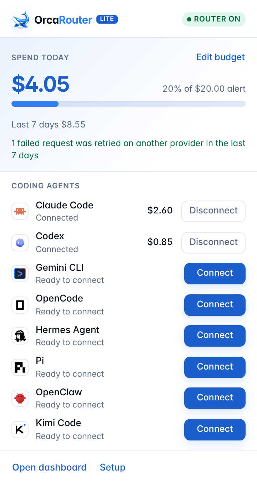

Free and open source · macOS, Windows, Linux
Put a budget on every coding agent
See and cap what Claude Code, Codex, Gemini CLI and 16 more coding agents spend, across every model provider. Orca lives in your menu bar, and your prompts go straight from your agents to the providers you choose.
Orca runs on macOS, Windows and Linux. Open this page on your computer, or pick a build below.

Or install from the terminal
-
macOS app (Homebrew)
brew install --cask continuum-ai-corp/tap/orcarouter-lite -
Windows app (winget)
winget install OrcaRouter.Lite -
Just the
orcaCLI (Homebrew)brew install continuum-ai-corp/tap/orcarouter-lite -
Just the
orcaCLI (any OS with Python)pipx install orcarouter-lite
Thirty seconds from install to a budget
- InstallOne app, with its own engine and a local database. No server, no Docker.
- ConnectSetup finds the coding agents on your computer and connects them in one click. It backs up their settings and restores them when you disconnect.
- SpendToday's total sits in the menu bar, split by agent. A Monday note sums up the week.
- AlertNotifications at 80% and 100% of your daily budget. Tick one box and Orca pauses your agents at the limit.
Works with
 Claude Code
Claude Code Codex
Codex Gemini CLI
Gemini CLI OpenCode
OpenCode Cline
Cline- Command Code
 Hermes Agent
Hermes Agent- Pi
- OMP
- Kilo Code
 OpenClaw
OpenClaw Kimi Code
Kimi Code- Goose
 Cursor
Cursor- Aider
- Zed
- OpenHands
 DeepSeek Harness
DeepSeek Harness ZCode
ZCode
…and anything that speaks the OpenAI, Anthropic or Gemini API. Agent names and logos are trademarks of their owners, shown only to identify each agent; no endorsement is implied. Sources and licenses.
OrcaRouter
Free models to start, one key for every model
Orca works with your own provider keys. If you'd rather not juggle them, OrcaRouter's hosted gateway gives every agent one key for every model, with failover between providers when one is down. Agents start on free models; paid models are billed per request, and only when you choose them.